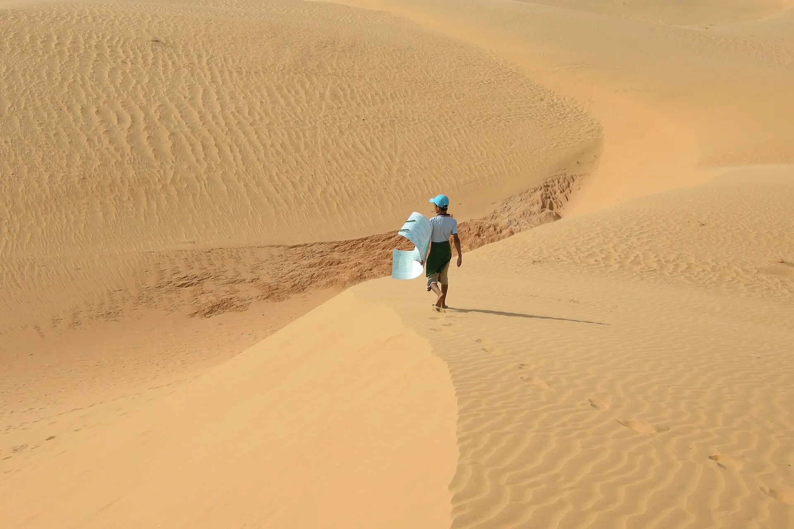

藩切 bánh căn
边缘酥脆的 bánh căn，蘸焖鱼酱。

美奈以随风变换形状的红、白沙丘，在红土峭壁间流淌的仙女溪，以及满是簸箕船的热闹渔村而闻名。这里也是东南亚的风筝冲浪之都。
正在加载天气...
点击月份查看是否适合出行
School holidays make beaches their busiest of the year.
Travel midweek and book early for better prices.
Steady north-east monsoon winds make Mui Ne one of Asia's best-known kitesurfing spots; the beach fills with colourful kites.
Beginners should learn at a certified school (about 3 sessions); the sea is choppy and not ideal for small children.
农历节日每年日期不同——出发前请确认官方日期。
边缘酥脆的 bánh căn，蘸焖鱼酱。
海边的酥脆鱿鱼煎饼。
Fresh seafood, scallops with scallion oil
Nguyễn Đình Chiểu, Hàm Tiến, Mũi Né 更新于 2026/09 报错Buy seafood on the beach at dawn
Làng chài Mũi Né 更新于 2026/09 报错Mini rice pancakes, squid banh xeo
TP Phan Thiết 更新于 2026/09 报错Lau tha – anchovy "hotpot" salad
Phan Thiết – Mũi Né 更新于 2026/09 报错Rice vermicelli with pork offal for breakfast
TP Phan Thiết 更新于 2026/09 报错Grilled or stir-fried sand lizard
Hàm Tiến, Mũi Né 更新于 2026/09 报错Stirred noodles with fish cake
TP Phan Thiết 更新于 2026/09 报错Grilled seafood and snacks
Trung tâm TP Phan Thiết 更新于 2026/09 报错每人参考价格。点击地址可在 Google 地图查看营业时间和最新评价。
乘吉普车在白沙丘看日出。
全年风力强劲稳定——风筝冲浪的理想地。
在飞沙丘上用板子滑下。
赤脚走在红白相间的峭壁间。
根据此目的地和月份推荐（在行程部分选择出发日期可更改月份）。勾选已打包的物品方便记忆。
发现价格、开放时间变了或店铺已关门？ 报错
700k–2.5M / 晚
Beachfront resorts near the food strip.
300k–700k / 晚
Budget-friendly, handy for dune sunrises.
1.5M–4M / 晚
Newer, quieter resorts.
From Saigon: ~3.5 h on the expressway by bus or limousine, or the train to Phan Thiet Station (~4 h) then a 20-min taxi.
| 从河内出发 |
|
|---|---|
| 从岘港出发 |
|
| 从胡志明市出发 |
|
预计行程时间，每人单程经济票价——仅供参考。加粗的是推荐方式。
两人一晚参考房价，春节、假日和周末更贵。Việt Travel 不从预订网站收取佣金。
Việt Travel · 林同（原平顺） · 最佳时间: 11 月 – 4 月
Jeep to watch sunrise over the White Dunes.
Walk the Fairy Stream and visit Mui Ne fishing village.
夜间散步片刻，然后回去休息
Learn kitesurfing or swim at your resort.
Poshanu Cham towers and the wine castle.
Bánh căn and mackerel salad.
夜间散步片刻，然后回去休息
Ke Ga lighthouse – one of Vietnam's oldest lighthouses.
Back in Phan Thiet for lẩu thả hotpot.
夜间散步片刻，然后回去休息
行程结束：退房，购买当地特产后返程。
在住处吃早餐（常含在房费中）
Swim at Hon Rom and paddleboard in the morning.
Phan Thiet fish sauce village and local specialties.
夜间散步片刻，然后回去休息
行程结束：退房，购买当地特产后返程。
在住处附近当地人多的小店吃早餐
Cable car up Ta Cu mountain to Southeast Asia's largest reclining Buddha.
Return to Saigon or stay another night at the resort.
行程结束：退房，购买当地特产后返程。
明细：预算
明细：舒适
明细：预算
明细：舒适
明细：预算
明细：舒适
不含前往美奈的机票/交通。参考价格，随季节变动。
想去多个地方？把美奈和其他目的地组合起来吧。
分享你的经历
读者照片
还没有照片——来第一个分享你在美奈的瞬间吧！
分享你的照片